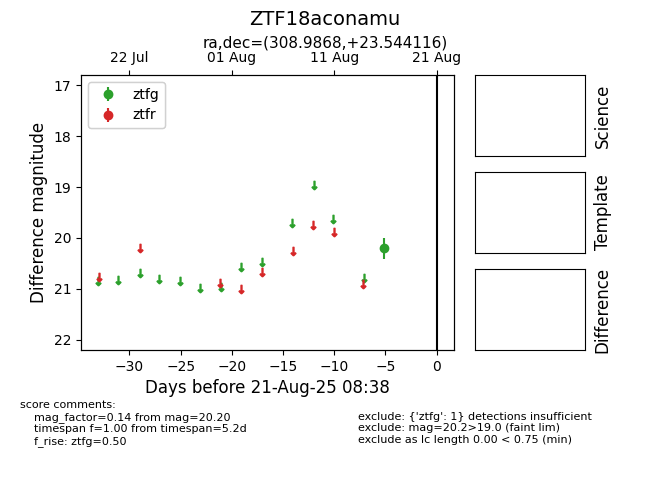

Target ZTF18aconamu at 2025-08-21 08:38, see:
FINK: fink-portal.org/ZTF18aconamu
Lasair: lasair-ztf.lsst.ac.uk/objects/ZTF18aconamu
ALeRCE: alerce.online/object/ZTF18aconamu
alt names
ZTF18aconamu (ztf,alerce)
coordinates:
equatorial (ra, dec) = (308.9868,+23.54412)
galactic (l, b) = (66.1801,-10.20384)
photometry
last ztfg=20.20
1 ztfg detections
